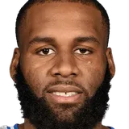

Played 3 seasons for 4 teams; his teams went 5–14 in his games.
Jump to: Record by opponent · Season by season · Teammate help
Compare Arinze Onuaku with…
Final NBA finish, season by season
Title Finals Other playoffs Missed playoffs. #1 = champion; the dashed line is last place that season. Each point opens that season's final standings.
All 30 teams ranked in 2013-14, his best finish (#21)Teammate help
 Anthony Davis1.01 season
Anthony Davis1.01 season Andrew Wiggins0.81 season
Andrew Wiggins0.81 season Zach LaVine0.11 season
Zach LaVine0.11 season
Career
Career records (W–L, W − L, with and without) include 2026-27 games through Nov. 17, 2026; season counts and finishes are through 2025-26. Each card opens its board in the same scope. How we count.

Latest completed seasons
Season by season
Newest first; every header sorts. Final NBA finish is the team's rank among all teams that season (#1 = champion) and opens that season's standings. "Without him" uses the team-season window; the span line counts only the games between his first and last game for the team.
| 2016-17 | #26 of 30 | 29–53 35.4% | Missed playoffs | 8 of 82 | 3–5 37.5% | 26–48 35.1%span: 10–13, gap −6.0 | +2.4 | |
| 2014-15 | #30 of 30 | 16–66 19.5% | Missed playoffs | 6 of 82 | 0–6 0.0% | 16–60 21.1%span: N/A, gap N/A | −21.1 | |
| 2013-14 | #21 of 30 | 34–48 41.5% | Missed playoffs | 3 of 82 | 1–2 33.3% | 22–32 40.7%span: 2–1, gap −33.3 | −7.4 | |
| 2013-14 | #22 of 30 | 33–49 40.2% | Missed playoffs | 2 of 82 | 1–1 50.0% | 30–44 40.5%span: 0–1, gap +50.0 | +9.5 |
On/off, starts and close games
From the lineup data, 1996-97 on. On/off is net points per 100 possessions with him on the floor minus off, a different unit from the win-rate gaps. Started and off the bench are team records in those games; close games are those within 5 points in the last 5 minutes with him on the floor.
| 2016-17 | −14.7 | N/A | 3–5 37.5% | N/A | |
| 2014-15 | +6.2 | 0–1 0.0% | 0–5 0.0% | 0–1 0.0% | |
| 2013-14 | −13.7 | N/A | 1–2 33.3% | N/A | |
| 2013-14 | −11.6 | N/A | 1–1 50.0% | N/A |
Teammate help by season
Two separate numbers per season, each with every teammate that adds to it. Help this season = Teammates Score points for honors won that season by teammates who shared a game with him. Help coming in = the same teammates' honors from the season before. How help works.
- 2016-17
 OrlandoHelp this season: 0, no honored teammate
OrlandoHelp this season: 0, no honored teammate - 2014-15
 Minnesota
Minnesota
Help this season: 0.875 = 0.75 Andrew Wiggins + 0.125 Zach LaVine
Andrew Wiggins ROYAll-Rookie 1st0.756 gZach LaVine All-Rookie 2nd0.1256 g
More: help coming in and other teammates
Help coming in (teammates' honors the season before): 0
Other teammates (no honors that season): Adreian Payne 6 g, Lorenzo Brown 6 g, Justin Hamilton 6 g, Kevin Martin 5 g, Robbie Hummel 5 g, Chase Budinger 5 g, Anthony Bennett 1 g
- 2013-14
 New Orleans
New Orleans
Help this season: 1 = 1 Anthony Davis
Anthony Davis All-Star13 g
More: help coming in and other teammates
Help coming in (teammates' honors the season before): 1.25 = 1 Jrue Holiday + 0.25 Anthony Davis
Other teammates (no honors that season): Brian Roberts 3 g, Al-Farouq Aminu 3 g, Jrue Holiday 3 g, Tyreke Evans 3 g, Greg Stiemsma 3 g, Anthony Morrow 3 g, Eric Gordon 3 g, Jason Smith 3 g, Jeff Withey 2 g, Austin Rivers 2 g, Lance Thomas 2 g
- 2013-14
 Cleveland
Cleveland
Help this season: 1.5 = 1.5 Kyrie Irving
 Kyrie Irving All-StarAll-Star MVP1.52 g
Kyrie Irving All-StarAll-Star MVP1.52 g
More: help coming in and other teammates
Help coming in (teammates' honors the season before): 2.375 = 1 Kyrie Irving + 1 Luol Deng + 0.25 Dion Waiters + 0.125 Tyler Zeller
Other teammates (no honors that season): Luol Deng 2 g, Matthew Dellavedova 2 g, Sergey Karasev 2 g, Tyler Zeller 2 g, Tristan Thompson 2 g, Alonzo Gee 2 g, Spencer Hawes 2 g, Jarrett Jack 2 g, Anthony Bennett 1 g, Dion Waiters 1 g
Record against each opponent
Regular season, through 2025-26 (2026-27 games not included): 19 games, 5–14, against 14 franchises.
Grouped by franchise (named as today); game lists keep each team's name that season. Filters and the tab are kept in the URL, so a filtered view can be shared.
| Games list | |||||||
|---|---|---|---|---|---|---|---|
| 3 | 0–3 | 0.0% | −3 | N/A | 2013-14 to 2016-17 | ||
| 2 | 1–1 | 50.0% | 0 | N/A | 2016-17 | ||
| 2 | 1–1 | 50.0% | 0 | N/A | 2013-14 to 2014-15 | ||
| 2 | 1–1 | 50.0% | 0 | N/A | 2013-14 to 2016-17 | ||
| 1 | 0–1 | 0.0% | −1 | N/A | 2016-17 | ||
| 1 | 0–1 | 0.0% | −1 | N/A | 2014-15 | ||
| 1 | 0–1 | 0.0% | −1 | N/A | 2014-15 | ||
| 1 | 1–0 | 100.0% | +1 | N/A | 2016-17 | ||
| 1 | 0–1 | 0.0% | −1 | N/A | 2014-15 | ||
| 1 | 0–1 | 0.0% | −1 | N/A | 2013-14 | ||
| 1 | 0–1 | 0.0% | −1 | N/A | 2014-15 | ||
| 1 | 0–1 | 0.0% | −1 | N/A | 2014-15 | ||
| 1 | 0–1 | 0.0% | −1 | N/A | 2016-17 | ||
| 1 | 1–0 | 100.0% | +1 | N/A | 2013-14 |
Rows add up to his career record in his games. A playoff series counts when he played in it; early round-robin games show as games only. How we count.
Arrival and departure
Team wins per 82 games the season before he arrived vs his first season there, and his last season vs the season after he left. Per 82 so short seasons compare fairly. These are team records, not a measure of what he did.
| Left | 2017-18 | 2016-17: 29–53 29.0 per 82 | 2017-18: 25–57 25.0 per 82 | −4.0 wins | |
| Arrived | 2016-17 | 2015-16: 35–47 35.0 per 82 | 2016-17: 29–53 29.0 per 82 | −6.0 wins | |
| Left | 2015-16 | 2014-15: 16–66 16.0 per 82 | 2015-16: 29–53 29.0 per 82 | +13.0 wins | |
| Arrived | 2014-15 | 2013-14: 40–42 40.0 per 82 | 2014-15: 16–66 16.0 per 82 | −24.0 wins | |
| Left | 2014-15 | 2013-14: 34–48 34.0 per 82 | 2014-15: 45–37 45.0 per 82 | +11.0 wins | |
| Left | 2014-15 | 2013-14: 33–49 33.0 per 82 | 2014-15: 53–29 53.0 per 82 | +20.0 wins | |
| Arrived | 2013-14 | 2012-13: 27–55 27.0 per 82 | 2013-14: 34–48 34.0 per 82 | +7.0 wins | |
| Arrived | 2013-14 | 2012-13: 24–58 24.0 per 82 | 2013-14: 33–49 33.0 per 82 | +9.0 wins |
Seasons split between teams
Each team's record before his first game for it, inside his window (games with and without him) and after his last game, in the seasons he played for two or more teams.
| 2013-14 | Oct. 30, 2013 to Nov. 8, 2013 | N/A | 23–34 40.4% | 11–14 44.0% | 3 | |
| 2013-14 | Feb. 28, 2014 to March 4, 2014 | 2–4 33.3% | 31–45 40.8% | N/A | 2 |